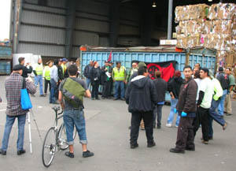
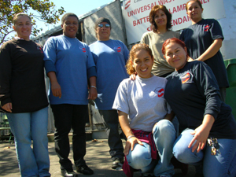
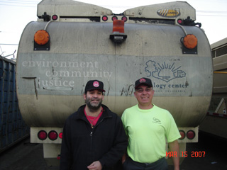

Submitted on Wed, 02/06/2008 - 3:56pm
By M.K. and other members of the Bay Area Utility Service Workers iu670 industrial organizing committee.

The
contract negotiations between the Bay Area IU 670 Recycling Workers
Union and the two Berkeley Recycling Companies has been a challenging
struggle, but workers have stepped up to fight for tremendous
improvements. The Bay Area IWW represents drivers at The Ecology
Center who do residential curbside pickup, and workers at The
Community Conversation Center yard who sort and process recycling
materials. Both workers have been waging shopfloor struggles to
resolve grievances and improve their working conditions. With both
contracts coming up for negotiations, workers stepped up the fight.
The
drivers met several times both at work and outside of work to draft
an ambitious list of roughly 15 demands including an across the board
wage hike, increase in pension payments by the company, and a change
to the current accident penalties. The existing agreement resulted
in termination of any driver who was involved in three accidents
incurring more than $1400 worth of damage. With the narrow winding
streets of Berkeley and the increasing costs of small accidents like
broken rear-view mirrors, we have seen several workers purposefully
dropping down to a loader after two incidents. This has resulted in
wage decreases of up to $10 per hour!
Submitted on Wed, 11/14/2007 - 4:42pm
Recyclers held a stop work rally to press contract demands on Thursday, November 8th, at recycling facilities in Berkeley. Thirty-five or so workers from two Berkeley recycling operations are in the midst of renegotiating contracts. At “curbside”, recycling trucks go out every week day morning to pick up residential recycling. Across the way at “the Buyback,” residential recycling from the trucks plus drop-off recycling is sorted by twenty workers. All workers are members of the IWW. Both union contracts expire on December 31st, 2007. During the rally workers from both shops stepped up and spoke about the need for unity, participation and solidarity in order to win their demands. Demands are not the same at both shops. However, workers at both shops are calling for a five dollar an hour wage increase across the board. This is a serious demand.
Submitted on Sat, 09/15/2007 - 5:12am
By Fellow Worker Bruce Valde.
By now the story of what happened when truck drivers and loaders at Berkeley’s Ecology Center “curbside” recycling program refused to work until their demands were met is the stuff of legend.
This report adds more information concerning the IWW recycling sorters at a company in the same block who stopped worked and marched in solidarity to a meeting of the Curbside drivers and loaders in the midst of the work stoppage, which lasted from 6 am until 1 pm on Monday, September 10th.
Workers from Community Conservation Centers marched into the Ecology Center trailer in support of their co-unionists. The 25 workers at the Buyback are members of the IWW. When informed that trucks would not roll and that the drivers/loaders were holding a meeting, the workers at the Buyback stopped work and held a solidarity / safety meeting of their own.
Submitted on Tue, 09/11/2007 - 2:09pm
By Mike H., Matt K., Steve O., and Bruce V.
The recycling collection workers at the Ecology Center's Curbside Recycling Program have long sparred with management over working conditions. The IWW has represented this shop since 1989. On Monday, September 10, 2007, the recyclers held a stop work meeting and refused to move their equipment until their demands were met.
The latest struggle occurred when the City of Berkeley added waste collection routes to their collection program. The City of Berkeley waste collection workers are employed directly by the city and represented by a SEIU 790, a "Change to Win" business union. The Ecology Center is operated as an independent non-profit which receives city money to help fund its recycling program.
Unlike many cities that outsource their municipal operations to private entities and non-profits (often to reduce operating costs and weaken labor union solidarity), the Berkeley Ecology Center has a unique relationship with the City of Berkeley. The Ecology Center created the city's curbside recycling program long before such programs were standard services.
Apparently, the contract with the city requires the Ecology Center to match their collection routes with the city's, even though the programs are mostly separate from each other. Prior to the city's change, the recyclers worked seven routes daily, three of which were duo-routes (having two workers per truck) and the remainder were solo.
Ecology Center management proposed adding an additional route, but making each of the eight routes solo routes. The Ecology Center recyclers have a route committee system, described in the union contract, though Management still has the official power to make the changes. While the union members on the route committee signed off on the changes, they were not aware of how the changes would affect the work once put into practice.
After the first week of the change, it was clear that the eight solo-route plan was universally unpopular among the union workers. The union recyclers met on Saturday, September 8, 2007, along with organizers from the Bay Area IWW branch and some rank & file workers from the city waste collection program. They agreed that they preferred to retain the duo routes.
On Monday, the crew refused to operate their trucks until Management agreed to restore the three duo routes. After it was clear that no trucks would move until the union's demands were addressed, Daniel Maher, the operations manager, agreed to consider alternatives to the new, eight-solo route plan. The union crew demanded three duo routes and five solo routes. Maher rejected this plan and asked the crew to "vote" on an alternative.
At first, Mr. Maher tried to single out shop steward, Mike Hudgins, and divide the crew, but this tactic didn't work. The crew was adamant about their demands and the strongest voices were those recyclers with the lowest seniority.
One hour later, the union crew revealed that their "vote" was to stand firm by their demands. Mr. Maher, having encouraged the crew to vote on an alternative decided that democracy was only acceptable if the outcome was acceptable to his interests and asked the crew to "vote" again! So the union crew repeated the process. One hour later, the results were still the same! It was obvious that the union wouldn't budge!
Submitted on Wed, 08/08/2007 - 12:17pm
 Disclaimer - the following editorial is not by a member of the IWW, nor do they necessarily agree with or endorse our organization. The editorial is posted here because it closely matches the perspective of many IWW members and the Preamble to the IWW Constitution. It also affects IWW members in Industrial Union 670 directly.
Disclaimer - the following editorial is not by a member of the IWW, nor do they necessarily agree with or endorse our organization. The editorial is posted here because it closely matches the perspective of many IWW members and the Preamble to the IWW Constitution. It also affects IWW members in Industrial Union 670 directly.
By Richard Mellor - AFSCME Local 444 Retired, Oakland CA, August 2, 2007.
San Leandro CA - After absorbing the severe financial stress of being locked out for a month, members of Teamsters Local 870 suffered further setbacks in the contract deal brought to them by Teamster officials. The employers, Waste Management Co, imported scabs from other parts of the U.S. during the lockout and brought in their other allies, a mediator and Oakland mayor, Ron Dellums. The liberal community and the heads of the labor movement in this area have revered Dellums, a former congressman and mentor of another popular liberal Democrat, Barbara Lee.
When asked by the press if the lockout “was a test of his leadership” Dellums replied, "I don't take it to have anything to do with me. It has to do with a company in a dispute with a labor union. It would be a gigantic mistake for me to personalize this. That's a journey I choose not to go on." (1)
With friends like these, it should come as no surprise that Waste Management got what they wanted. According to press reports, management got a five-year contract while workers got a 5% raise which with inflation will most likely be a wage reduction